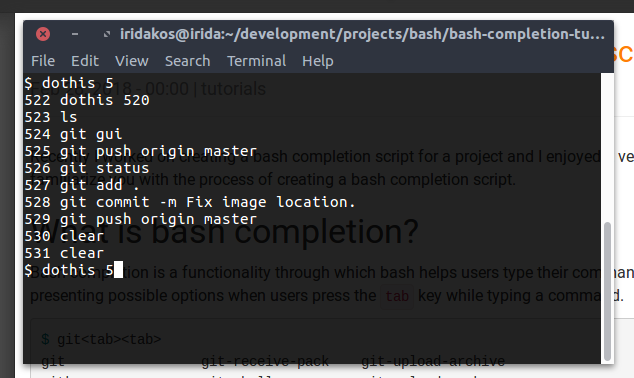

Once mastered, bash completions scripts will greatly improve your terminal experience and make you more productive. This article tackles the technical details of implementing a bash completion script using pure bash. The main article about bash completion tweaking is: Faster workflow using bash completion scripts. In this article, we focus on the process of creating a bash completion script. What is bash completion? Bash completion is a functionality through which bash helps users type their commands faster and easier. It accomplishes that by presenting possible options when users press the tab key while typing a command. $ git<tab><tab> git git-receive-pack git-upload-archive gitk git-shell git-upload-pack $ git-s<tab> $ git-shell How it works The completion script is code that uses the builtin bash command complete to define which completion suggestions can be displayed for a given executable. The nature of the completion options vary from simple static to highly sophisticated. Why bother To save you from typing text when it can be auto-completed; to help you know what are the available continuations for a command; to prevent errors and improve your command line experience. Code and comments You can find the code of this tutorial on GitHub. Hands on Here's what we are going to do in this tutorial. We will first create a dummy executable script called dothis. All it does is execute the command which resides on the number, that was passed as an argument, in user's history. For example, the following command will simply execute the ls -a command given that it exists in history with number 235: dothis 235 Then we will create a bash completion script that will display commands along with their number from user's history and we will "bind" it to the dothis executable. $ dothis <tab><tab> 215 ls 216 ls -la 217 cd ~ 218 man history 219 git status 220 history | cut -c 8-  Let the show begin. Creating the executable script Create a file named dothis in your working directory and add the following code: if [ -z "$1" ]; then echo "No command number passed" exit 2 fi exists=$(fc -l -1000 | grep ^$1 -- 2>/dev/null) if [ -n "$exists" ]; then fc -s -- "$1" else echo "Command with number $1 was not found in recent history" exit 2 fi Notes: * We first check if the script was called with an argument * We then check if the specific number is included in the last 1000 commands * if it exists we execute the command using the fc functionality * otherwise we display an error message Make the script executable with: chmod +x ./dothis We are going to execute this script many times in this tutorial so I suggest you place it in a folder that is included in your path so that we can access it from anywhere with just typing dothis. I installed it in my home bin folder using: install ./dothis ~/bin/dothis You can do the same given that you have a ~/bin folder and that it is included in your PATH variable. Try to see if it's working: dothis You should see this. $ dothis No command number passed Done. Creating the completion script Create a file named dothis-completion.bash. From now on we will be referring to this file with the term completion script. Once we add some code to it, we will source it to allow the completion to take effect. We must source this file every single time we change something in it. We will discuss our options for registering this script whenever a bash shell opens later on. Static completion Suppose that the dothis program supported a list of commands, for example: * now * tomorrow * never Let's use the complete command to register this list for completion. To use the proper terminology, we say we use the complete command to define a completion specification (compspec) for our program. Add this to the completion script. #/usr/bin/env bash complete -W "now tomorrow never" dothis What did we specify with the complete command above: * we used the -W (wordlist) option to provide a list of words for completion. * we defined to which "program" these completion words will be used (the dothis parameter) Source the file: source ./dothis-completion.bash Now try pressing tab twice in the command line as shown below: $ dothis <tab><tab> never now tomorrow Try again after typing the n: $ dothis n<tab><tab> never now Magic! The completion options are automatically filtered to match only those starting with n. Note: The options are not displayed in the order that we defined them in the word list, they are automatically sorted. There are a lot of other options to be used instead of the -W that we used in this section. Most of them produce completions in a fixed manner, meaning that we don't intervene dynamically to filter their output. For example, if we wanted to have directory names as completion words for the dothis program, we would change the complete command to the following: complete -A directory dothis Pressing tab after the dothis program, we would get a list of the directories in the current directory from which we execute the script: $ dothis <tab><tab> dir1/ dir2/ dir3/ Find the complete list of the available flags here. Dynamic completion We will be producing the completions of the dothis executable with the following logic: If user presses the tab key right after the command, we will show the last 50 executed commands along with their numbers in history If user presses the tab key after typing a number that matches more than one commands from history, we will show only those commands along with their numbers in history If user presses the tab key after a number that matches exactly one command in history, we auto-complete the number without appending the command's literal (if it's confusing, you will better understand later on, no worries) Let's start by defining a function that will execute each time user requests completion on a dothis command. Change the completion script to this: #/usr/bin/env bash _dothis_completions() { COMPREPLY+=("now") COMPREPLY+=("tomorrow") COMPREPLY+=("never") } complete -F _dothis_completions dothis Note the following: * we used the -F flag in the complete command defining that the _dothis_completions is the function that will provide the completions of the dothis executable * COMPREPLY is an array variable used to store the completions - the completion mechanism uses this variable to display its contents as completions Now source the script and go for completion: $ dothis <tab><tab> never now tomorrow Perfect. We produce the same completions as in the previous section with the word list. Or not? Try this: $ dothis nev<tab><tab> never now tomorrow As you can see, even though we type nev and then we request for completion, the available options are always the same and nothing gets completed automatically. Why is this happening? * The contents of the COMPREPLY variable are always displayed. The function is responsible to add/remove entries from there now. * If the COMPREPLY variable had only one element then that word would be automatically completed in the command. Since current implementation always return the same three words, this will not happen. Enter compgen: a builtin command that generates completions supporting most of the options of the complete command (ex. -W for word list, -d for directories) and filtering them based on what already has been typed by the user. Don't worry if you feel confused, everything will become clear later on. Type the following in the console to better understand what compgen does: $ compgen -W "now tomorrow never" now tomorrow never $ compgen -W "now tomorrow never" n now never $ compgen -W "now tomorrow never" t tomorrow So now we can use it but we need to find a way to know what has been typed after the dothis command. We already have the way. The bash completion facilities provide bash variables related to the completion taking place. Here are the more important ones: COMP_WORDS: an array of all the words typed after the name of the program the compspec belongs to COMP_CWORD: an index of the COMP_WORDS array pointing to the word the current cursor is at - in other words, the index of the word the cursor was when the tab key was pressed COMP_LINE: the current command line To access the word just after the dothis word, we can use the value of COMP_WORDS[1] Change the completion script again: #/usr/bin/env bash _dothis_completions() { COMPREPLY=($(compgen -W "now tomorrow never" "${COMP_WORDS[1]}")) } complete -F _dothis_completions dothis Source and there you are: bash $ dothis never now tomorrow $ dothis n never now Now, instead of the now, tomorrow, never words, we would like to see actual numbers from the command history. The fc -l command followed by a negative number -n displays the last n commands. So, we will use: fc -l -50 which lists the last 50 executed commands along with their numbers. The only manipulation we need to do is replace tabs with spaces in order to be displayed properly from the completion mechanism. sed to the rescue. Change the completion script as follows: #/usr/bin/env bash _dothis_completions() { COMPREPLY=($(compgen -W "$(fc -l -50 | sed 's/\t//')" -- "${COMP_WORDS[1]}")) } complete -F _dothis_completions dothis Source and test in the console: $ dothis <tab><tab> 649 source dothis-completion.bash 666 cat ~/.bash_profile 650 clear 667 cat ~/.bashrc 651 source dothis-completion.bash 668 clear 652 source dothis-completion.bash 669 install ./dothis ~/bin/dothis 653 source dothis-completion.bash 670 dothis 654 clear 671 dothis 6546545646 655 dothis 654 672 clear 656 dothis 631 673 dothis 657 dothis 150 674 dothis 651 658 dothis 675 source dothis-completion.bash 659 clear 676 dothis 651 660 dothis 677 dothis 659 661 install ./dothis ~/bin/dothis 678 clear 662 dothis 679 dothis 665 663 install ./dothis ~/bin/dothis 680 clear 664 dothis 681 clear 665 cat ~/.bashrc Not bad. We do have a problem though. Try typing a number as you see it in your completion list and the press the key again. $ dothis 623<tab> $ dothis 623 ls 623 ls -la ... $ dothis 623 ls 623 ls 623 ls 623 ls 623 ls -la This is happening because in our completion script, we used the ${COMP_WORDS[1]} to always check the first typed word after the dothis command (the number 623 in the above snippet). Hence the completion continues suggesting the same completion again and again while pressing the tab key. To fix this, we will not allow any kind of completion to take place if at least one argument has already been typed. We will add a condition in our function checking the size of the aforementioned COMP_WORDS array. #/usr/bin/env bash _dothis_completions() { if [ "${#COMP_WORDS[@]}" != "2" ]; then return fi COMPREPLY=($(compgen -W "$(fc -l -50 | sed 's/\t//')" -- "${COMP_WORDS[1]}")) } complete -F _dothis_completions dothis Source and retry. $ dothis 623<tab> $ dothis 623 ls -la<tab> # SUCCESS: nothing happens here There is another thing we don't like though. We do want to display the numbers along with the corresponding commands to help users decide which one is the desired but when there is only one completion suggestion and gets automatically picked by the completion mechanism, we shouldn't append the command literal too. In other words, our dothis executable accepts only a number and we haven't added any functionality checking or expecting other arguments. When our completion function gives only one result, we should trim the command literal and respond only with the command number. To accomplish this, we will keep the response of the compgen command in an array variable and if its size is 1 we will trim the one and only element to keep just the number. Otherwise, we'll let the array as is. Change the completion script to this: #/usr/bin/env bash _dothis_completions() { if [ "${#COMP_WORDS[@]}" != "2" ]; then return fi # keep the suggestions in a local variable local suggestions=($(compgen -W "$(fc -l -50 | sed 's/\t/ /')" -- "${COMP_WORDS[1]}")) if [ "${#suggestions[@]}" == "1" ]; then # if there's only one match, we remove the command literal # to proceed with the automatic completion of the number local number=$(echo ${suggestions[0]/%\ */}) COMPREPLY=("$number") else # more than one suggestions resolved, # respond with the suggestions intact COMPREPLY=("${suggestions[@]}") fi } complete -F _dothis_completions dothis Registering the completion script If you want to enable the completion just for you on your machine, all you have to do is add a line in your .bashrc file sourcing the script: source <path-to-your-script>/dothis-completion.bash If you want to enable the completion for all users, you can just copy the script under /etc/bash_completion.d/ and it will automatically be loaded by Bash. Fine tuning the completion script Some extra steps for better results :) Displaying each entry in a new line Well, in the bash completion script I was working on, I too had to present suggestions consisting of two parts. I wanted to display the first part with the default color and the second part with a gray color to point out that it was just help text. In this tutorial's example, it would be nice to present the numbers in the default color but the command literal in another one, less fancy. Unfortunately, this is not possible at least for the time being because the completions are displayed as plain text and color directives are not processed (for example: \e[34mBlue). What we can do though to improve user experience (or not :D) is to display each entry in a new line. This solution is not that obvious since again we can't just append a new line character in each COMPREPLY entry. We will follow a rather hackish way and pad suggestion literals to such a width that fills the terminal's width. Enter printf. If you want to display each suggestion on each own line, change the completion script to the following: #/usr/bin/env bash _dothis_completions() { if [ "${#COMP_WORDS[@]}" != "2" ]; then return fi local IFS=$'\n' local suggestions=($(compgen -W "$(fc -l -50 | sed 's/\t//')" -- "${COMP_WORDS[1]}")) if [ "${#suggestions[@]}" == "1" ]; then local number="${suggestions[0]/%\ */}" COMPREPLY=("$number") else for i in "${!suggestions[@]}"; do suggestions[$i]="$(printf '%*s' "-$COLUMNS" "${suggestions[$i]}")" done COMPREPLY=("${suggestions[@]}") fi } complete -F _dothis_completions dothis Source and test: dothis <tab><tab> ... 499 source dothis-completion.bash 500 clear ... 503 dothis 500 Customizable behavior In our case, we hard-coded to display the last 50 commands for completion. This is not a good practice. We should first respect what each user might prefer and if he/she hasn't made any preference then we should default to 50. To accomplish that we will check if an environment variable DOTHIS_COMPLETION_COMMANDS_NUMBER has been set. Change the completion script one last time: #/usr/bin/env bash _dothis_completions() { if [ "${#COMP_WORDS[@]}" != "2" ]; then return fi local commands_number=${DOTHIS_COMPLETION_COMMANDS_NUMBER:-50} local IFS=$'\n' local suggestions=($(compgen -W "$(fc -l -$commands_number | sed 's/\t//')" -- "${COMP_WORDS[1]}")) if [ "${#suggestions[@]}" == "1" ]; then local number="${suggestions[0]/%\ */}" COMPREPLY=("$number") else for i in "${!suggestions[@]}"; do suggestions[$i]="$(printf '%*s' "-$COLUMNS" "${suggestions[$i]}")" done COMPREPLY=("${suggestions[@]}") fi } complete -F _dothis_completions dothis Source and test: export DOTHIS_COMPLETION_COMMANDS_NUMBER=5 $ dothis <tab><tab> 505 clear 506 source ./dothis-completion.bash 507 dothis clear 508 clear 509 export DOTHIS_COMPLETION_COMMANDS_NUMBER=5 Useful links Git's completion script Bash completion for goto, one of my shell scripts Bash Reference Manual: Programmable Completion Bash Reference Manual: Programmable Completion Builtins Bash Reference Manual: A Programmable Completion Example Bash Reference Manual: Bash Variables Based on an original by Lazarus Lazaridis. Reposted with permission. Edited for style and conciseness.
Other articles you might like: Faster workflow with bash completion scripts How to write a command-line interface Simple bash scripts to leverage GitHub's REST API Complete guide to writing command-line tools How to write a git commit message